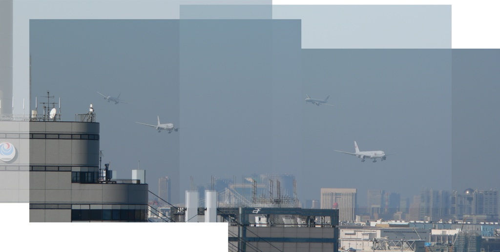
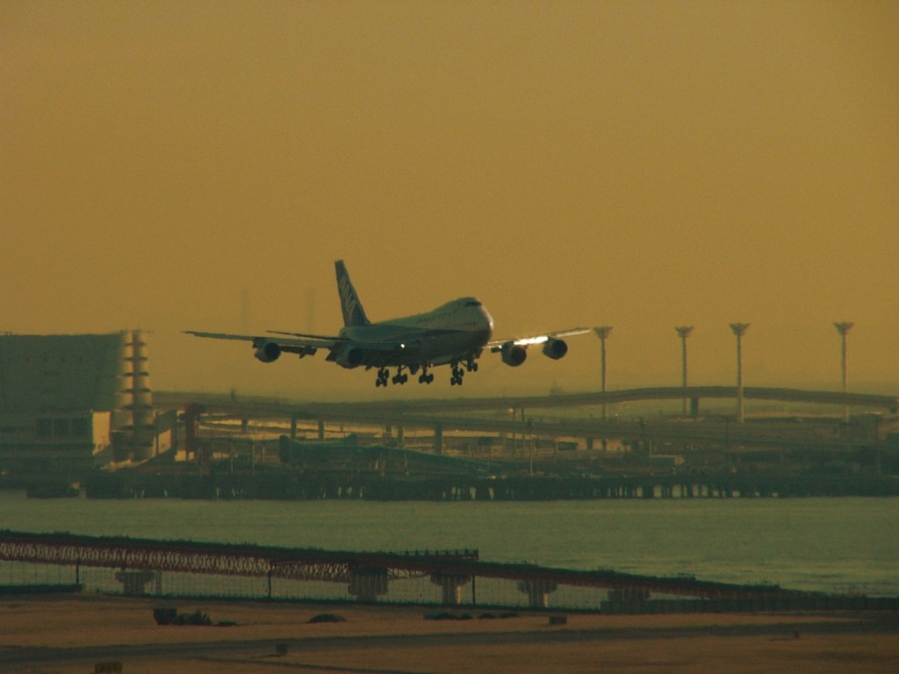
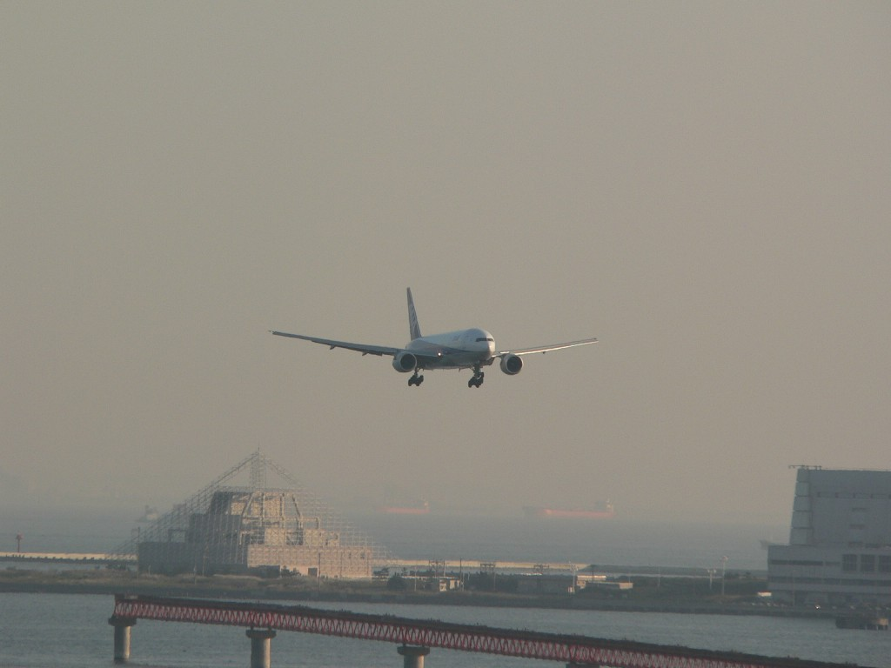
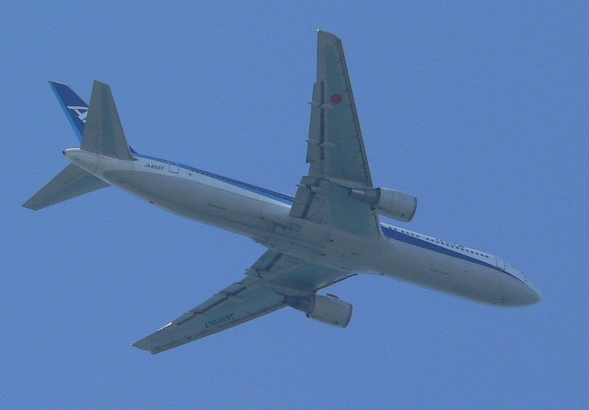
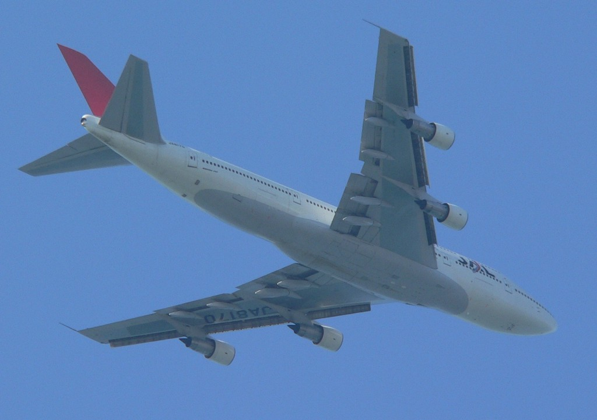
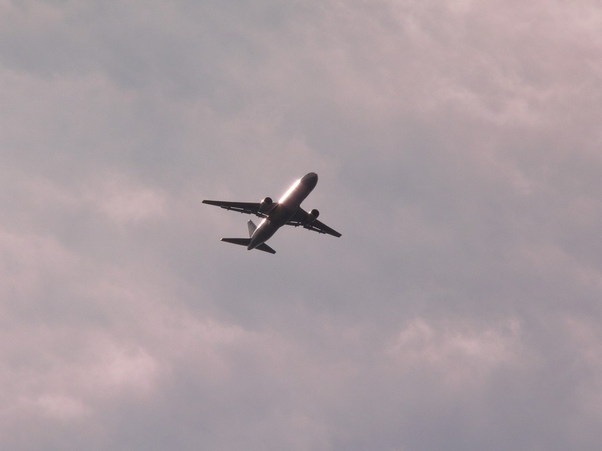
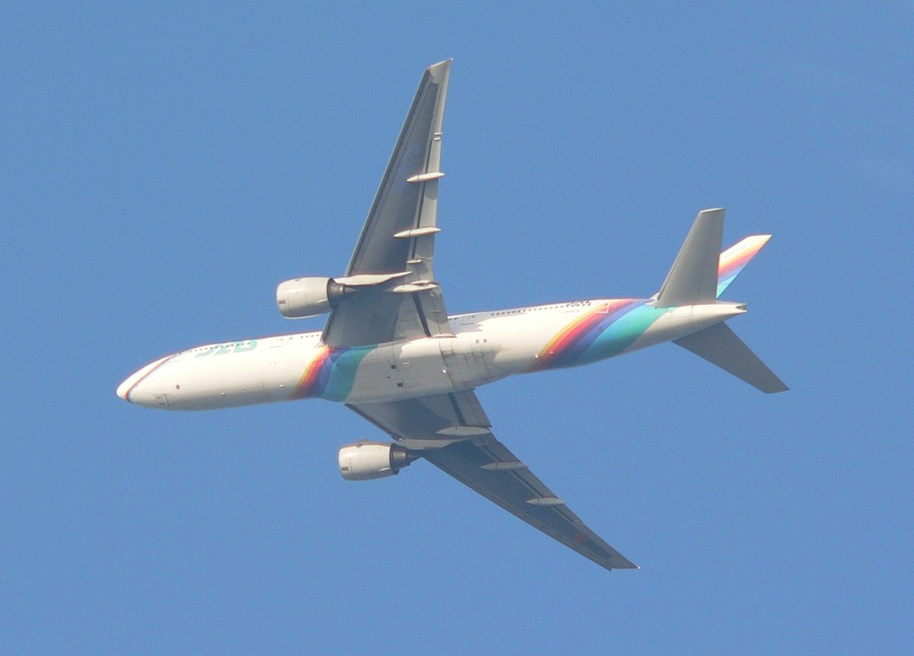

photo kotan
Approach Shots to Haneda 16L = Photo Movie =

Approach Haneda 16L (overlapped images)

A Jumbo jet approach to Haneda 34L

ANA B777 approach to Haneda 34L
Approach shots to Haneda 34 L/R over Kisarazu

ANA B767

JAL B747


B777 Rainbow Seven